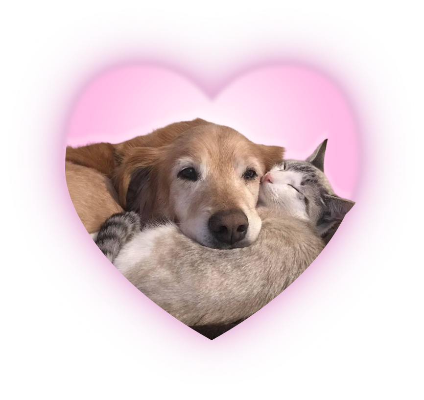
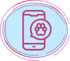
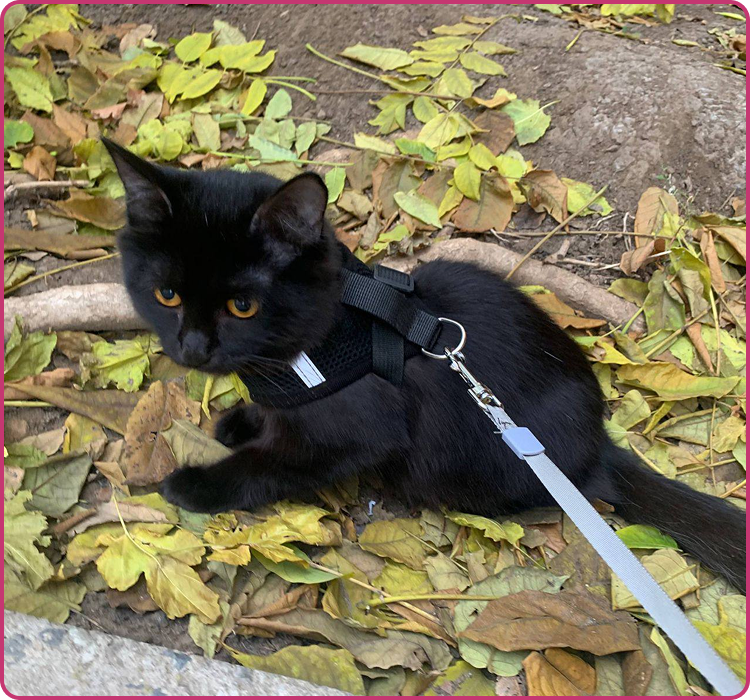
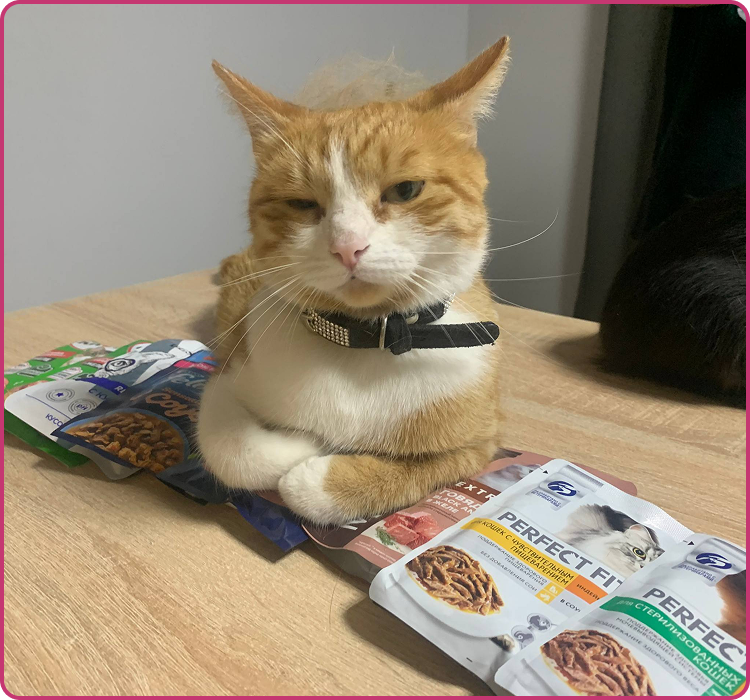
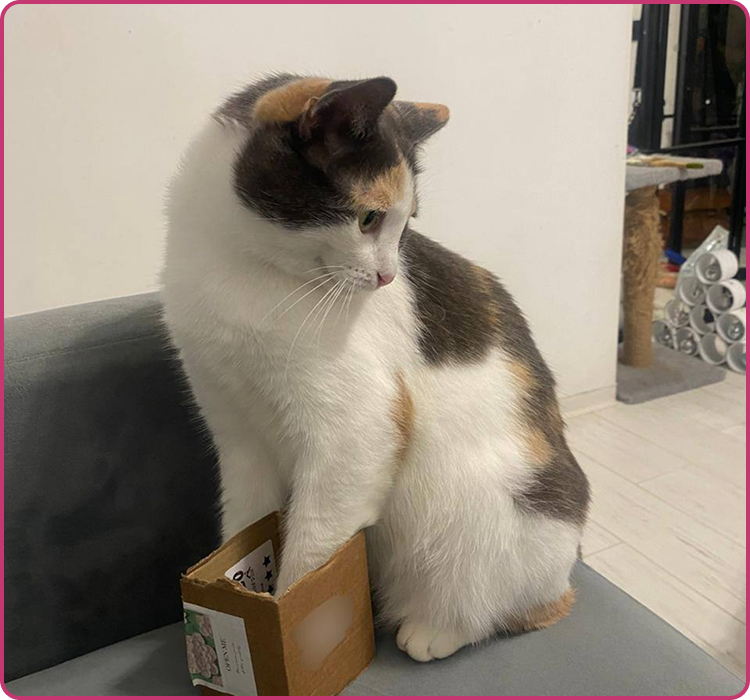

Мы объединяем тех, кто мечтает подарить
заботу питомцу, нуждающемуся в любви и
уюте.
Мы верим, что каждый котенок и щенок
заслуживает счастья и заботы. Поэтому наша
цель — создать
пространство, где будущие
хозяева смогут быстро найти друг друга,
подарив питомцам новый дом и
новую
жизнь!

Взгляните на наш каталог питомцев и
помогите спасти еще одну жизнь!
Выберите своего будущего друга — кошку или
собаку, которая ищет любящий дом.
Опытные волонтёры круглосуточно
ухаживают за каждым животным,
гарантируя комфорт и
безопасность.
Животные проходят обязательную
вакцинацию, обработку от
паразитов и медицинское
обследование
перед
знакомством с
новым хозяином.

Поддерживаем постоянную связь с
новыми семьями, собираем обновления
и фото, следим за
здоровьем
питомцев.
Любой ваш взнос улучшает жизнь
животного, помогая ему быстрее
обрести дом и любящую семью
Наш фонд существует примерно 3-4 года и занимается спасением
бездомных животных, предоставляя им
временный кров и заботу до
нахождения постоянного дома.
Мы объединились вокруг общей цели: помогать несчастным
животным, оказавшимся на улице, давая им
вторую попытку на
лучшую жизнь.
Опытные волонтёры и энтузиасты. Наша команда состоит
из опытных добровольцев, имеющих тесные контакты
с
ветеринарными клиниками, и простых людей, готовых
прийти на помощь любому нужному существу.
Если вы сами обнаружили бездомное животное, помните: фонд не
принимает новых подопечных —
ответственность за дальнейшую
судьбу животного несёте вы лично. Мы готовы предложить
консультации и
советы, однако не занимаемся содержанием чужих
находок.

У этой малышки трогательная история. По пути на работу, девушка заметила, как посреди
улицы сидит
маленький комочек, а вокруг него кричала стая собак. Малышку спасли, и с того дня она
прибывала
в нашем фонде. Была блохастой и имела клещей в ушах, которых в дальнейшем мы вывели. К
нашему
удивлению, людей она n не боялась.
Юка, хоть и любила играть с другими кошками, но имела очень ревнивый характер. Требует к себе
очень много внимания.
Спустя 6 месяцев нахождения в фонде, нашлись хозяева для этой малышки. Сейчас она живет
в
квартире с милой женщиной, которая дарит ей все свое внимание и заботу.

Эта грациозная рыжуля покорила сердца многих людей. Впервые, её увидели в подъезде
мнгоэтажного дома - одна была очень худой. По внешнему виду её можно было сказать, что
недавно, она родила котят. Маску забрали, выходили ее и котят, откормили, после чего она
стала частью нашей пушистой семьи!
Маска очень ласковая, и имеет добрый характер. Даже
когда её котят отдали в хорошие руки, она заботилась о других котятах фонда, как о
своих! Собак она недолюбливала, и часто защищала котят от них. Настоящая защитница.
Маска довольно долго пробыла в фонде, и лишь спустя год, она нашла своих хозяев. Сейчас
она живёт в частном доме, в окружении своей новой семьи, которая её очень любит и
заботится о ней!

Эта кошечка с непростой судьбой.. Раньше, она жила в какой-то семье людей, которая даже
простерелизовала животное, однако, эта семья выкинула кошечку на улицу. Причины нам
неизвестны, как и личности данных особ, однако, главное, что эта история с хорошим
продолжением! Пухлю подобрали и принесли в наш фонд, где в последующем, она стала лучшей
подружкой Маски.
Пухля очень любит покушать, отчего ей и досталось такое имя. Характер у нее спокойный, она ласковая но менее
активная чем остальные кошечки, любит поспать.
Спустя полгода нахождения в фонде, нашлись достойные хозяева и для этой малышки. Мы
убедились в адекватности и добрых намерениях хозяев, и каждый месяц с помощью общения с
хозяевами, убеждаемся, что с Пухлей все хорошо, и она живет свою лучшую кошачью жизнь!